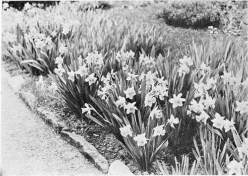

Chapter XXV. On Feminine Taste In Rural Affairs
Description
This section is from the book "Landscape Gardening", by Andrew Jackson Downing. Also available from Amazon: Landscape Gardening.
Chapter XXV. On Feminine Taste In Rural Affairs
WHAT a very little fact sometimes betrays the national character; and what an odd thing this national character is! Look at a Frenchman. He eats, talks, lives in public. He is only happy when he has spectators. In town, on the boulevards, in the cafe, at places of public amusement, he is all enjoyment. But in the country — ah, there he never goes willingly; or else, he only goes to sentimentalize, or to entertain his town friends. Even the natural born country people seem to find nature and solitude ennuyant, and so collect in little villages to keep each other in spirits! The Frenchman eats and sleeps almost any where; but he is never "at home but when he is abroad".
Look, on the other hand, at John Bull. He only lives what he feels to be a rational life, when he lives in the country. His country place is to him a little Juan Fernandez island; it contains his own family, his own castle, everything that belongs to him. He hates the smoke of town; he takes root in the soil. His horses, his dogs, his trees, are not separate existences; they are parts of himself. He is social with a reservation. Nature is nearer akin to him than strange men. His dogs are truly attached to him; he doubts if his fellows are. People often play the hypocrite; but the trees in his park never deceive him. Home is to him the next best place to heaven.
And only a little narrow strait of water divides these two nations!
Shall we ever have a distinct national character? Will a country, which is settled by every people of the old world, — a dozen nations, all as distinct as the French and the English, — ever crystallize into a symmetrical form — something distinct and homogeneous? And what will that national character be?
* Original date of April, 1849.
Certainly no one, who looks at our comparative isolation — at the broad ocean that separates us from such external influences — at the mighty internal forces of new government and new circumstances, which continually act upon us, — and, above all, at the mighty vital force of the Yankee Constitution, which every year swallows hundreds of thousands of foreigners, and digests them all; no one can look reflectingly on all this, and not see that there is a national type, which will prevail over all the complexity, which various origin, foreign manners, and different religions bring to our shores.
Fig. 39. Trumpet Narcissus Along the Garden Walk.
The English are, perhaps, the most distinct of civilized nations, in their nationality. But they had almost as mixed an origin as ourselves, — Anglo-Saxon, Celts, Roman, Danish, Norman; all these apparently discordant elements, were fused so successfully into a great and united people.
That a hundred years hence will find us quite as distinct and quite as developed, in our national character, we cannot doubt. What that character will be, in all its phases, no one at present can precisely say; but that the French and English elements will largely influence it in its growth, and yet, that in morals, in feeling, and in heart, we shall be entirely distinct from either of those nations, is as clear to us as a summer noon.
We are not going into a profound philosophical dissertation on the political or the social side of national character. We want to touch very slightly on a curious little point that interests us; one that political philosophers would think quite beneath them; one that moralists would not trouble themselves about; and one that we are very much afraid nobody else will think worth notice at all; and therefore we shall set about it directly.
What is the reason American ladies don't love to work in their gardens?
It is of no use whatever, that some fifty or a hundred of our fair readers say, "we do." We have carefully studied the matter, until it has become a fact past all contradiction. They may love to "potter" a little. Three or four times in the spring they take a fancy to examine the color of the soil a few inches below the surface; they sow some China asters, and plant a few dahlias, and it is all over. Love flowers, with all their hearts, they certainly do. Few things are more enchanting to them than a fine garden; and bouquets on their center tables are positive necessities, with every lady, from Maine to the Rio Grande.
Now, we certainly have all the love of nature of our English forefathers. We love the country; and a large part of the millions, earned every year by our enterprise, is spent in creating and embellishing country homes. But, on the contrary, our wives and daughters only love gardens as the French love them — for the results. They love to walk through them; they enjoy the beauty and perfume of their products, but only as amateurs. They know no more of that intense enjoyment of her who plans, creates, and daily watches the growth of those gardens or flowers, — no more of absolute, living enjoyment, which the English have in out-of-door pursuits, than a mere amateur, who goes through a fine gallery of pictures, knows of the intensified emotions which the painters of those pictures experienced in their souls, when they gazed on the gradual growth and perfected splendor of their finest masterpieces.
As it is plain, from our love of the country, that we are not French at heart, this manifestation that we complain of, must come from our natural tendency to copy the social manners of the most polished nation in the world. And it is indeed quite wonderful how, being scarcely in the least affected by the morale, we still borrow almost instinctively, and entirely without being aware of it, so much from la belle France. That our dress, mode of life, and intercourse, is largely tinged with French taste, every traveller notices. But it goes farther. Even the plans of our houses become more and more decidedly French. We have had occasion, lately, to make considerable explorations in the domestic architecture of France and England, and we have noticed some striking national peculiarities. One of these relates to the connection of the principal apartments. In a French house, the beau ideal is to have everything ensuite; all the rooms open into each other; or, at least, as many of the largest as will produce a fine effect. In an English house, every room is complete in itself. It may be very large, and very grand, but it is all the worse for being connected with any other room; for that destroys the privacy which an Englishman so much loves.
Continue to:
- prev: Chapter XXIV. Influence Of Horticulture
- Table of Contents
- next: On Feminine Taste In Rural Affairs. Part 2